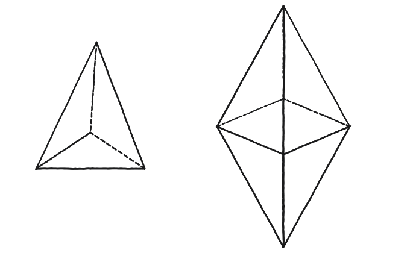
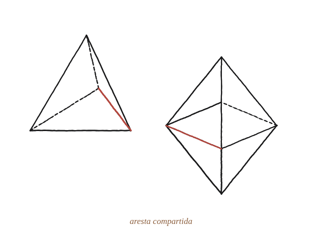

Demostra que es pot omplir l'espai completament fent servir octaedres i tetraedres regulars. Pots trobar altres maneres d'enrajolar l'espai tridimensional amb poliedres simètrics?

Què hem de produir
Una comprovació que, al voltant de cada aresta compartida, els angles diedres dels sòlids que hi conflueixen sumen exactament 360° —el mateix test que ja funciona per als mosaics plans amb polígons regulars, ara en 3D i sobre arestes en lloc de vèrtexs.
Quants sòlids de cada mena, a cada aresta
A cada aresta d'aquest folrat, hi conflueixen alguns tetràedres i alguns octàedres. Amb l'angle diedre de cadascun (ja trobat), quina combinació suma 360°?
La construcció

Tancar-ho
Dos angles diedres de tetràedre (2×70,53°) més dos d'octàedre (2×109,47°) sumen 360° exactes —perquè cada parella (un tetràedre, un octàedre) ja en suma 180°. Aquesta combinació concreta (2+2) és la que realment es fa servir en aquest folrat de l'espai.
Al voltant de cada aresta, dos tetràedres i dos octàedres regulars omplen exactament els 360°: aquesta combinació folra l'espai tridimensional sense deixar cap buit ni superposició.
Comprovació
2×70,53°+2×109,47° = 141,06°+218,94° = 360° exacte.
A diferència del mosaic pla, on un sol tipus de polígon regular (el triangle, el quadrat, l'hexàgon) ja pot folrar tot sol, aquí calen dos sòlids diferents junts —el tetràedre regular sol no pot omplir l'espai, perquè el seu angle diedre, 70,53°, no divideix 360° de manera exacta cap nombre de vegades.